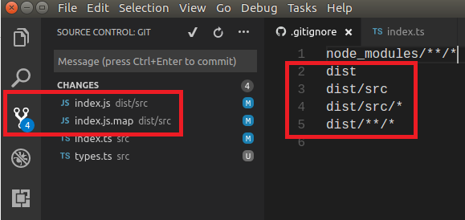

Why is .gitignore not ignoring my files?
See the image below. My .gitignore file should be ignoring all files in src/dist, but isn't.

Answer
.gitignore only ignores files that are not part of the repository yet. If
you already git added some files, their changes will still be tracked. To
remove those files from your repository (but not from your file system) use
git rm --cached on them.
Suggest
The .gitignore file ensures that files not tracked by Git remain
untracked.
Just adding folders/files to a .gitignore file will not untrack them -- they
will remain tracked by Git.
To untrack files, it is necessary to remove from the repository the tracked
files listed in .gitignore file. Then re-add them and commit your changes.
The easiest, most thorough way to do this is to remove and cache all files in
the repository, then add them all back. All folders/files listed in
.gitignore file will not be tracked. From the top folder in the repository
run the following commands:
git rm -r --cached . git add .
Then commit your changes:
git commit -m "Untrack files in .gitignore"
Please note that any previous commits with the unwanted files will remain in
the commit history. When pushing to GitHub be aware of a commit history that
might contain .env or client_secret.json files.
Best practice is to create a .gitignore file and populate it with the
folders/files you do not want tracked when starting a project. However, often
it is necessary to add to the .gitignore file after realising that unwanted
files are being tracked and stored.